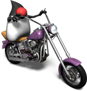

Heading off to Bangkok
The first Java TechDays of the year kicks off this Tuesday in Bangkok. I'm going to be there: wandering around and doing my usual handwaving. Lots of technical sessions, hands-on labs and demos. On Thursday there will be special tracks for NetBeans and Solaris. Guaranteed to be fun, if only because it's in Bangkok...| January 21, 2006 |